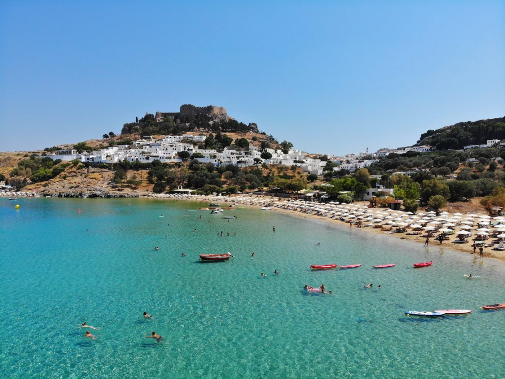
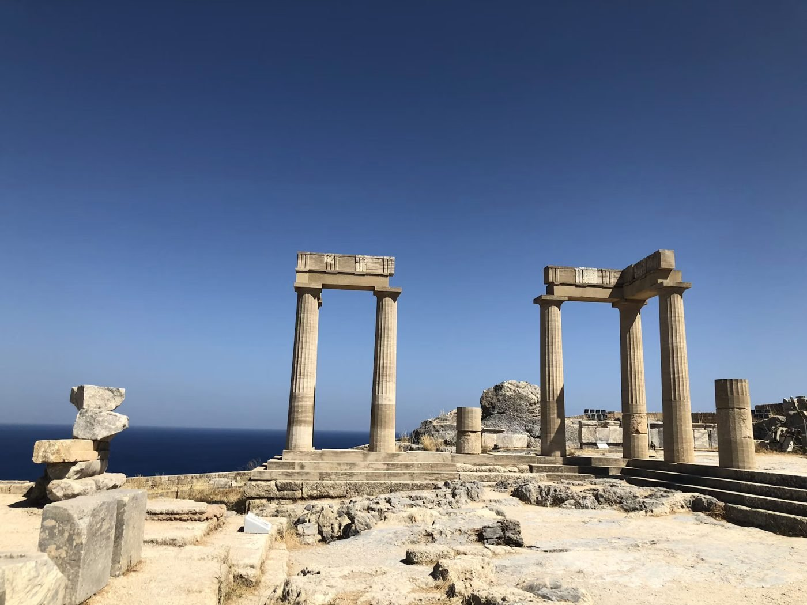
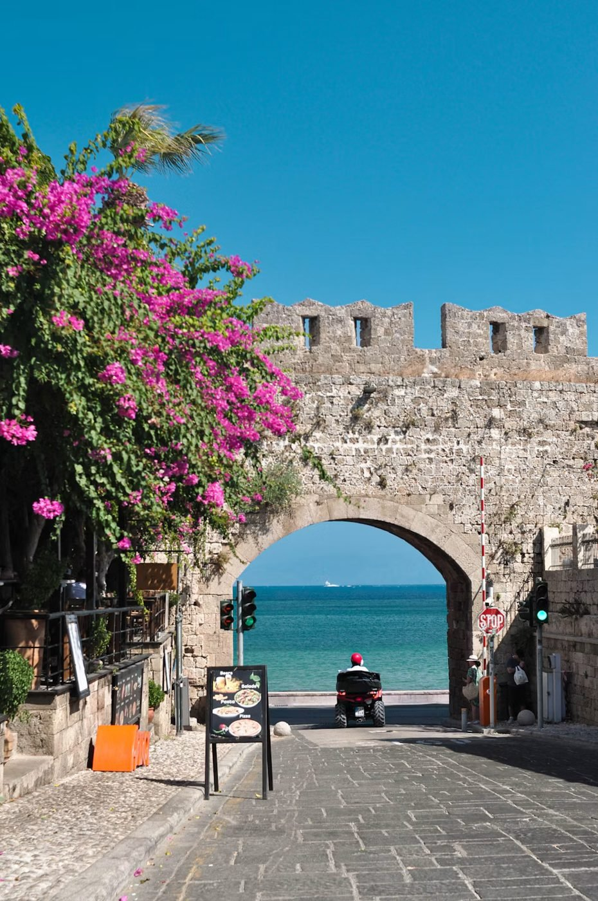
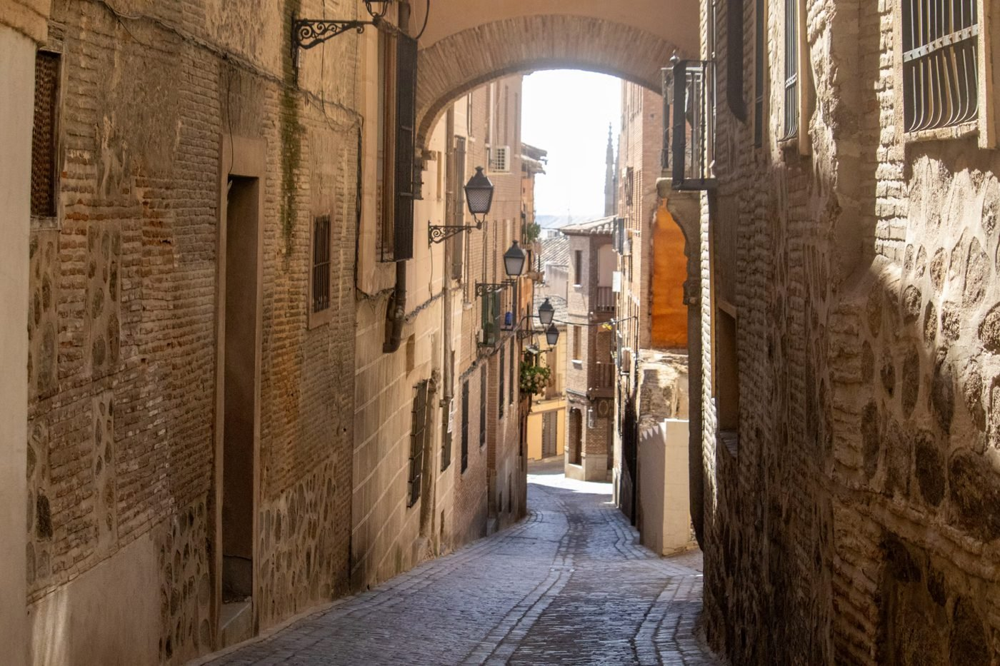
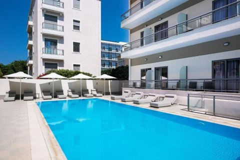

- Best time
- May–Jun, Sep–Nov
- Trip length
- 4 days
- Currency
- Euro (€)
- Language
- Greek; English is widely spoken
- Time zone
- UTC+2 (UTC+3 in summer)
- Getting around
- Car, bus, on foot
The route
Day by day
[One line on how the trip is paced, and where you slept each night.]
- Day 1
The Old Town of Rhodes
[Your notes: how long it took, where you ate, what to skip.]
- Street of the Knights
- Palace of the Grand Master
- Old Town walls
- Day 2
East coast beaches
[Your notes: which beach you liked most, parking, sunbeds.]
- Anthony Quinn Bay
- Tsambika Beach
- Day 3
Lindos
[Your notes: when you went up, tickets, where to swim after.]
- Acropolis of Lindos
- St Paul's Bay
- Lindos village
- Day 4
[Free day: your pick]
[A day trip, a slow beach day, or more of the Old Town.]
- [Stop]
- [Stop]
Map & photos
Where everything is
Numbers match the days of the route. Hover a stop to find it on the map.
Stops on the route
- 1Old TownDay 1
- 2Anthony Quinn BayDay 2
- 2Tsambika BeachDay 2
- 3LindosDay 3
- 4Ancient KamirosDay 4
- 4Monolithos CastleDay 4
- 4PrasonisiDay 4





Budget
What it really cost
Per person, for [days] days, at [month year] prices.
| What | Details | Cost |
|---|---|---|
| Flights | [From where, airline, return] | €[ ] |
| Stay | [n] nights, [hotel or area] | €[ ] |
| Food & drinks | About €[ ] a day | €[ ] |
| Tickets | Acropolis of Lindos | €[ ] |
| Extras | [Boat trip, sunbeds, souvenirs] | €[ ] |
| Total | Per person | from €[budget] |
Prices checked [month year]
Spotted a change? Tell me
Where to stay & book
Where I'd stay
[One line on how you chose: location, price, or the view.]

Angela Downtown Hotel
[Area] · [Room type] · [Why this one]
€[ ]a night · checked [month year]
Spotted a change? Tell me
Tips
Good to know
Tips
- Go up to the Acropolis of Lindos early: by late morning it is hot and busy.
- Walk the Old Town early in the day or after sunset, when the day-trippers have gone.
- [Your tip]
Mistakes to avoid
- [A mistake you made]
- [Something you'd skip next time]
- [A booking or timing mistake]
More from this trip on Instagram
Follow @inesskhachatryan